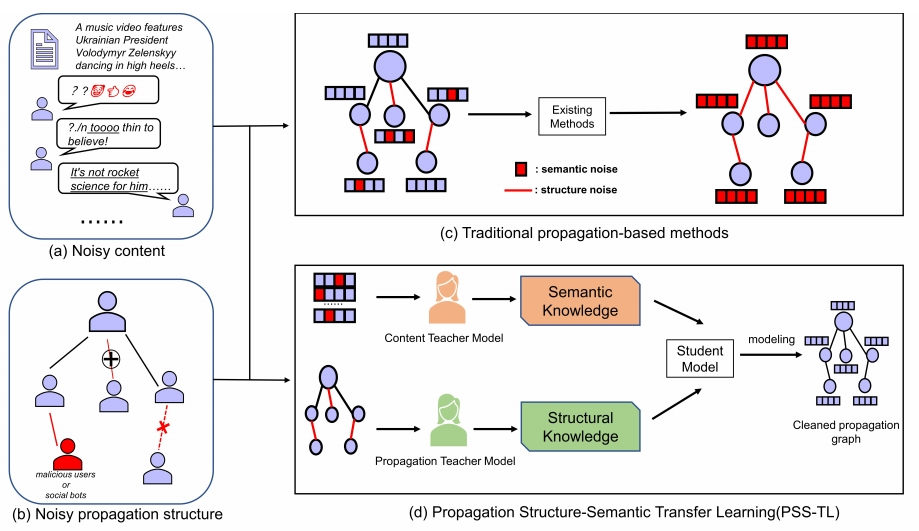
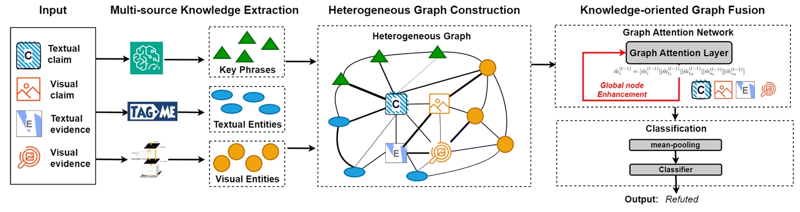
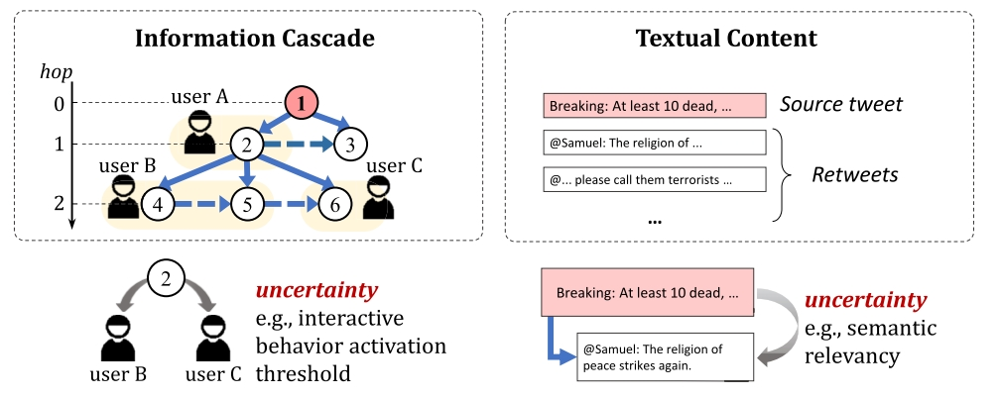
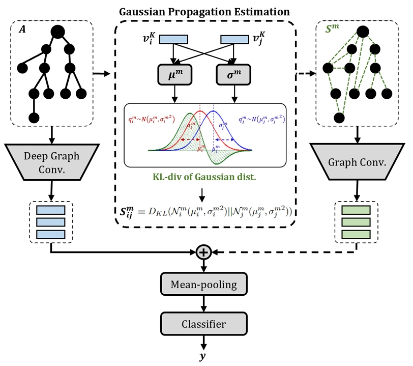
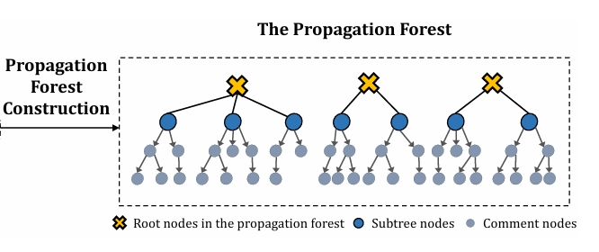

Lingwei Wei
About Me
I am currently a (tenure-track) Research Assistant Professor at Institute of Information Engineering, Chinese Academy of Sciences. I received the B.S. degree from University of Science and Technology Beijing (USTB) in June 2018, and the Ph.D. degree (Supervisor: Prof. Songlin Hu) from University of Chinese Academy of Sciences in June 2023. My main research focuses on natural language processing and graph learning.
Research Interests
- Natural Language Processing misinformation detection, sentiment analysis
- Graph Neural Networks text-graph mining, graph structure learning
- Trustworthy Large Language Models
News
- [July 2024] A fellowship is awarded from China Postdoctoral Science Foundation.
- [May 2024] One paper is accepted to ACL 2024 main conference.
- [May 2024] One paper is accepted to ECML-PKDD 2024 main conference.
- [April 2024] One paper is accepted to SIGIR 2024 main conference.
Selected Publications [Full List]
-
 ECML'24European Conference on Machine Learning and Principles and Practice of Knowledge Discovery in Databases (ECML-PKDD), 2024.CCF-B, Accepted
-
 ICME'24IEEE International Conference on Multimedia and Expo (ICME), 2024.CCF-B, Accepted
-
 ICASSP'24
IEEE International Conference on Acoustics, Speech and Signal Processing (ICASSP), 2024.PDF CCF-B
ICASSP'24
IEEE International Conference on Acoustics, Speech and Signal Processing (ICASSP), 2024.PDF CCF-B -
 TNNLS'24IEEE Transaction Neural Networks Learning System (TNNLS), 2024.
-
TMM'23IEEE Transaction Multimedia (TMM), 2023.
-
 COLING'22The 29th International Conference on Computational Linguistics (COLING), 2022.
-
 COLING'22The 29th International Conference on Computational Linguistics (COLING), 2022.
-
 ACL'21
The 29th International Conference on Computational Linguistics (COLING), 2022.
ACL'21
The 29th International Conference on Computational Linguistics (COLING), 2022.
Research Projects, Programs and Fundings
- [July 2024–Now] Host, Fellowship from China National Postdoctoral Program under Grant Number 2024M753481.
- [Dec. 2023–Now] Host, Postdoctoral Fellowship Program of China Postdoctoral Science Foundation under Grant Number GZC20232969.
Services
Conference Reviewers
IEEE/CVF Conference on Computer Vision and Pattern Recognition (CVPR) 2021-2023 IEEE/CVF International Conference on Computer Vision (ICCV) 2021 European Conference on Computer Vision (ECCV) 2022
Journal Reviewers
IEEE Transactions on Pattern Analysis and Machine Intelligence (TPAMI) International Journal of Computer Vision (IJCV)
Powered by Jekyll and Minimal Light theme.